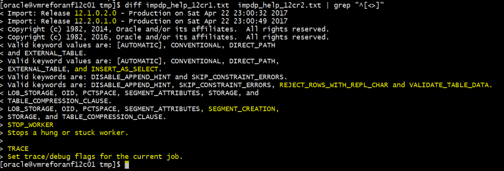

Data Pump is a powerful way to save data or metadata, move it, migrate, etc. Here is an example showing few new features in 12cR1 and 12cR2.
Here is the result of a diff between 12.1 and 12.2 ‘imp help=y’ 
But for this post, I’ll show the parameters that existed in 12.1 but have been enhanced in 12.2
This is a 12.1 feature. The parameter LOGTIME=ALL displays the system timestamp in front of the messages in at the screen and in the logfile. The default is NONE and you can also set it to STATUS for screen only and LOGFILE for logfile only.
[oracle@vmreforanf12c01 tmp]$ expdp system/manager@PDB01 parfile=impdp.par logfile=impdp.log Export: Release 12.2.0.1.0 - Production on Sat Apr 22 22:20:22 2017 Copyright (c) 1982, 2016, Oracle and/or its affiliates. All rights reserved. Connected to: Oracle Database 12c Enterprise Edition Release 12.2.0.1.0 - 64bit Production 22-APR-17 22:20:29.671: Starting "SYSTEM"."SYS_EXPORT_SCHEMA_01": system/********@PDB01 parfile=impdp.par logfile=impdp.log 22-APR-17 22:20:35.505: Processing object type SCHEMA_EXPORT/TABLE/TABLE_DATA 22-APR-17 22:20:36.032: Processing object type SCHEMA_EXPORT/TABLE/INDEX/STATISTICS/INDEX_STATISTICS 22-APR-17 22:20:36.407: Processing object type SCHEMA_EXPORT/TABLE/STATISTICS/TABLE_STATISTICS 22-APR-17 22:20:43.586: Processing object type SCHEMA_EXPORT/STATISTICS/MARKER 22-APR-17 22:20:44.126: Processing object type SCHEMA_EXPORT/USER 22-APR-17 22:20:44.199: Processing object type SCHEMA_EXPORT/SYSTEM_GRANT 22-APR-17 22:20:44.243: Processing object type SCHEMA_EXPORT/ROLE_GRANT 22-APR-17 22:20:44.296: Processing object type SCHEMA_EXPORT/DEFAULT_ROLE 22-APR-17 22:20:44.760: Processing object type SCHEMA_EXPORT/PRE_SCHEMA/PROCACT_SCHEMA 22-APR-17 22:20:53.706: Processing object type SCHEMA_EXPORT/TABLE/TABLE 22-APR-17 22:20:59.699: Processing object type SCHEMA_EXPORT/TABLE/CONSTRAINT/CONSTRAINT 22-APR-17 22:21:00.712: Processing object type SCHEMA_EXPORT/TABLE/CONSTRAINT/REF_CONSTRAINT 22-APR-17 22:21:03.494: . . exported "SCOTT"."DEMO" 8.789 KB 14 rows 22-APR-17 22:21:03.651: . . exported "SCOTT"."EMP" 8.781 KB 14 rows 22-APR-17 22:21:03.652: . . exported "SCOTT"."DEPT" 6.031 KB 4 rows 22-APR-17 22:21:03.654: . . exported "SCOTT"."SALGRADE" 5.960 KB 5 rows 22-APR-17 22:21:03.656: . . exported "SCOTT"."BONUS" 0 KB 0 rows 22-APR-17 22:21:04.532: Master table "SYSTEM"."SYS_EXPORT_SCHEMA_01" successfully loaded/unloaded 22-APR-17 22:21:04.558: ****************************************************************************** 22-APR-17 22:21:04.559: Dump file set for SYSTEM.SYS_EXPORT_SCHEMA_01 is: 22-APR-17 22:21:04.569: /u01/app/oracle/product/12.2.0/dbhome_1/rdbms/log/46EA7EF707457B4FE0531416A8C027F2/SCOTT_20170422.01.dmp 22-APR-17 22:21:04.622: Job "SYSTEM"."SYS_EXPORT_SCHEMA_01" successfully completed at Sat Apr 22 22:21:04 2017 elapsed 0 00:00:41
You will always appreciate finding timestamps in the log file. But remember that your import/export is processed by multiple workers and it is difficult to estimate duration between the different lines. I explained this in https://blog.dbi-services.com/datapump-processing-object-type-misleading-messages/
You can see that my DUMPFILE contains also the timestamp in the file name. This is possible in 12.2 with the %T substitution variable. Here was my PARFILE where DUMPFILE mentions %U (in addition to %U if there are multiple files):
[oracle@vmreforanf12c01 tmp]$ cat impdp.par schemas=SCOTT logtime=all dumpfile=SCOTT_%T.%U.dmp reuse_dumpfiles=yes filesize=1M
I don’t usually use a PARFILE and prefer to pass all parameters on the command line, even if this requires escaping a lot of quotes, because I like to ship the log file with the DUMPFILE. And before 12.2 the LOGFILE mentions only the parameters passed on command line. In 12.2 the PARFILE parameters are mentioned into the LOGFILE (but not to the screen):
;;; Export: Release 12.2.0.1.0 - Production on Sat Apr 22 22:20:22 2017 Copyright (c) 1982, 2016, Oracle and/or its affiliates. All rights reserved. ;;; Connected to: Oracle Database 12c Enterprise Edition Release 12.2.0.1.0 - 64bit Production 22-APR-17 22:20:24.899: ;;; ************************************************************************** 22-APR-17 22:20:24.901: ;;; Parfile values: 22-APR-17 22:20:24.903: ;;; parfile: filesize=1M 22-APR-17 22:20:24.905: ;;; parfile: reuse_dumpfiles=Y 22-APR-17 22:20:24.907: ;;; parfile: dumpfile=SCOTT_%T.%U.dmp 22-APR-17 22:20:24.909: ;;; parfile: logtime=all 22-APR-17 22:20:24.911: ;;; parfile: schemas=SCOTT 22-APR-17 22:20:24.913: ;;; ************************************************************************** 22-APR-17 22:20:29.654: Starting "SYSTEM"."SYS_EXPORT_SCHEMA_01": system/********@PDB01 parfile=impdp.par logfile=impdp.log 22-APR-17 22:20:35.469: Processing object type SCHEMA_EXPORT/TABLE/TABLE_DATA 22-APR-17 22:20:36.032: Processing object type SCHEMA_EXPORT/TABLE/INDEX/STATISTICS/INDEX_STATISTICS 22-APR-17 22:20:36.407: Processing object type SCHEMA_EXPORT/TABLE/STATISTICS/TABLE_STATISTICS 22-APR-17 22:20:43.535: Processing object type SCHEMA_EXPORT/STATISTICS/MARKER 22-APR-17 22:20:44.126: Processing object type SCHEMA_EXPORT/USER 22-APR-17 22:20:44.199: Processing object type SCHEMA_EXPORT/SYSTEM_GRANT 22-APR-17 22:20:44.243: Processing object type SCHEMA_EXPORT/ROLE_GRANT 22-APR-17 22:20:44.296: Processing object type SCHEMA_EXPORT/DEFAULT_ROLE 22-APR-17 22:20:44.760: Processing object type SCHEMA_EXPORT/PRE_SCHEMA/PROCACT_SCHEMA 22-APR-17 22:20:53.620: Processing object type SCHEMA_EXPORT/TABLE/TABLE 22-APR-17 22:20:59.699: Processing object type SCHEMA_EXPORT/TABLE/CONSTRAINT/CONSTRAINT 22-APR-17 22:21:00.712: Processing object type SCHEMA_EXPORT/TABLE/CONSTRAINT/REF_CONSTRAINT 22-APR-17 22:21:03.494: . . exported "SCOTT"."DEMO" 8.789 KB 14 rows 22-APR-17 22:21:03.651: . . exported "SCOTT"."EMP" 8.781 KB 14 rows 22-APR-17 22:21:03.652: . . exported "SCOTT"."DEPT" 6.031 KB 4 rows 22-APR-17 22:21:03.654: . . exported "SCOTT"."SALGRADE" 5.960 KB 5 rows 22-APR-17 22:21:03.656: . . exported "SCOTT"."BONUS" 0 KB 0 rows 22-APR-17 22:21:04.532: Master table "SYSTEM"."SYS_EXPORT_SCHEMA_01" successfully loaded/unloaded 22-APR-17 22:21:04.558: ****************************************************************************** 22-APR-17 22:21:04.559: Dump file set for SYSTEM.SYS_EXPORT_SCHEMA_01 is: 22-APR-17 22:21:04.569: /u01/app/oracle/product/12.2.0/dbhome_1/rdbms/log/46EA7EF707457B4FE0531416A8C027F2/SCOTT_20170422.01.dmp 22-APR-17 22:21:04.621: Job "SYSTEM"."SYS_EXPORT_SCHEMA_01" successfully completed at Sat Apr 22 22:21:04 2017 elapsed 0 00:00:41
Now the LOGFILE shows all export information. Only the password is hidden.
In 12.1 multitenant, you cannot use the default DATA_PUMP_DIR. It is there, but you just cannot use it implicitly or explicitly. With my PARFILE above when DIRECTORY is not mentioned I would have the following error:
ORA-39002: invalid operation ORA-39070: Unable to open the log file. ORA-39087: directory name DATA_PUMP_DIR is invalid
This means that there is no default possible and we need to mention DIRECTORY.
But in 12.2 it worked, going to /u01/app/oracle/product/12.2.0/dbhome_1/rdbms/log/46EA7EF707457B4FE0531416A8C027F2/ which is the default DATA_PUMP_DIR:
SYSTEM@PDB01 SQL> select * from dba_directories; OWNER DIRECTORY_NAME DIRECTORY_PATH ORIGIN_CON_ID ----- -------------- -------------- ------------- SYS TSPITR_DIROBJ_DPDIR /u90/tmp_data_restore 3 SYS PREUPGRADE_DIR /u01/app/oracle/product/12.2.0/dbhome_1/rdbms/admin 1 SYS XMLDIR /u01/app/oracle/product/12.2.0/dbhome_1/rdbms/xml 1 SYS ORA_DBMS_FCP_LOGDIR /u01/app/oracle/product/12.2.0/dbhome_1/cfgtoollogs 1 SYS ORA_DBMS_FCP_ADMINDIR /u01/app/oracle/product/12.2.0/dbhome_1/rdbms/admin 1 SYS ORACLE_OCM_CONFIG_DIR /u01/app/oracle/product/12.2.0/dbhome_1/ccr/state 1 SYS ORACLE_OCM_CONFIG_DIR2 /u01/app/oracle/product/12.2.0/dbhome_1/ccr/state 1 SYS XSDDIR /u01/app/oracle/product/12.2.0/dbhome_1/rdbms/xml/schema 1 SYS DATA_PUMP_DIR /u01/app/oracle/product/12.2.0/dbhome_1/rdbms/log/46EA7EF707457B4FE0531416A8C027F2 1 SYS OPATCH_INST_DIR /u01/app/oracle/product/12.2.0/dbhome_1/OPatch 1 SYS OPATCH_SCRIPT_DIR /u01/app/oracle/product/12.2.0/dbhome_1/QOpatch 1 SYS OPATCH_LOG_DIR /u01/app/oracle/product/12.2.0/dbhome_1/QOpatch 1 SYS ORACLE_BASE / 1 SYS ORACLE_HOME / 1
Of course, don’t leave it under ORACLE_HOME which is on a filesystem for binaries where you don’t want to put variable size files. But it is good to have a default.
{kind=link}
Typo: LOGFILE=ALL
Fixed, thanks.